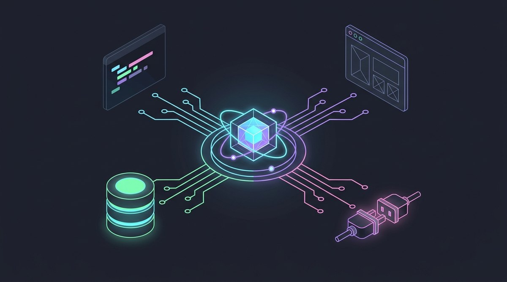
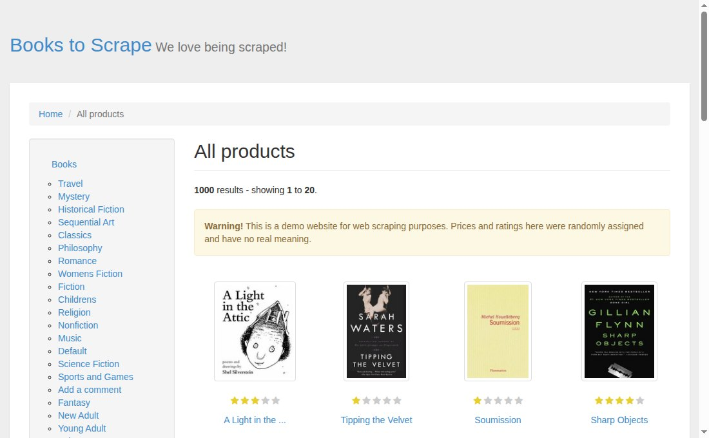
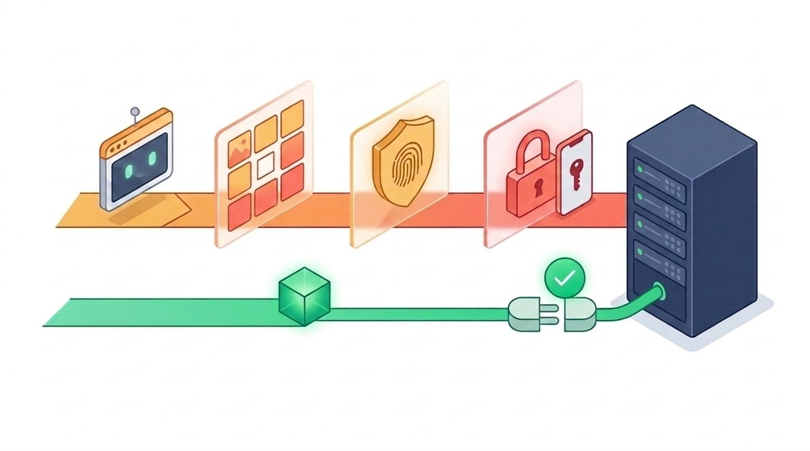
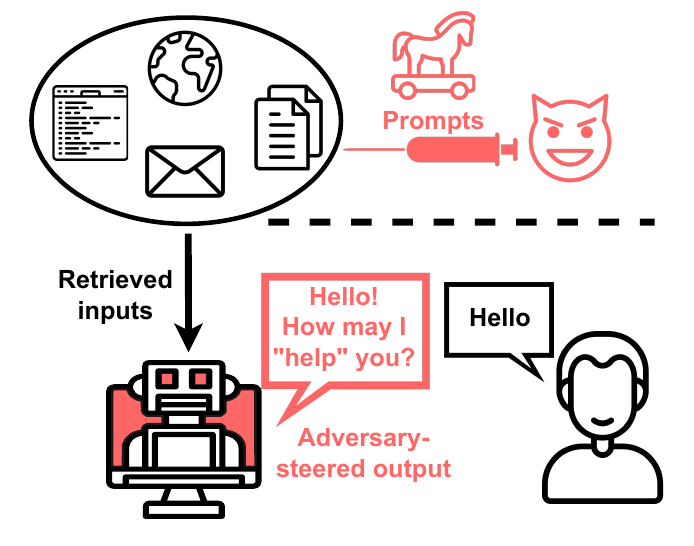

Chatbot vs. Loop Agêntico

Elaboração própria — arquitetura conceitual do ciclo de execução agêntico
A Base Científica: ReAct (2022–2023)
We explore the use of LLMs to generate both reasoning traces and task-specific actions in an interleaved manner, allowing for greater synergy between the two: reasoning traces help the model induce, track, and update action plans as well as handle exceptions, while actions allow it to interface with external sources, such as knowledge bases or environments, to gather additional information.
Concretely, on HotpotQA and FEVER, ReAct overcomes issues of hallucination and error propagation prevalent in chain-of-thought reasoning by interacting with a simple external API.
ReAct: Agindo Contra Alucinações

Fonte: Yao et al. (2023), ReAct (arXiv:2210.03629), Fig. 1
Ferramenta Agêntica ≠ LLM (Arquitetura Desacoplada)
O agente é o software que executa o loop, lê arquivos e chama ferramentas; o LLM é apenas o motor de decisão plugável via API ou local.
Ferramentas Agênticas (o “corpo”)
- Terminal (CLI): Mistral Vibe, OpenCode, Claude Code, Codex CLI, Gemini CLI
- IDE / Editor: Cursor, Cline, Roo Code, Windsurf, Antigravity
- Gerenciam sessão, permissões,
AGENTS.md, Skills e servidores MCP
LLMs Plugáveis (o “cérebro”)
- Proprietários (nuvem): Claude Sonnet/Opus, GPT-5/o3, Gemini Pro/Flash
- Abertos / Roteadores: DeepSeek-R1/V3, Qwen, Llama (OpenRouter, Groq, etc.)
- Locais (privacidade): Ollama / vLLM rodando na própria máquina
Independência na prática: você pode usar Mistral Vibe ou OpenCode com modelos na nuvem ou locais via Ollama — mantendo exatamente os mesmos AGENTS.md, Skills e MCPs.
Os 5 Pilares: O Que São Fisicamente (Roteiro de Hoje)
| Pilar | O que é fisicamente | Papel na aula de hoje |
|---|---|---|
| Contexto | A própria conversa acumulada (mensagens + retornos de ferramentas) enviada ao LLM | Memória RAM da sessão — zerada ao rodar /new |
| AGENTS.md | Arquivo texto .md com estrutura do projeto, estilo e comportamento do agente |
Prática 1: memória simples carregada em toda conversa |
| MCP | Protocolo padronizado (JSON-RPC) para conversar com ferramentas externas ou internas | Prática 2: Playwright + Chrome visível no CoinMarketCap |
| SKILL | Docs texto (SKILL.md: estilo e passo a passo) + scripts opcionais |
Prática 3: consolidar cotações cripto em uma Skill reutilizável |
| RAG + Grafos | Bancos vetoriais e grafos de conhecimento consultados sob demanda | Em escala: memória longa sem inflar o contexto |
Camadas complementares: vamos testar cada peça na prática — primeiro AGENTS.md, depois MCP, depois Skills, e fechar com um projeto completo!
Instalação e Acesso ao Mistral Vibe
1. Instalar e iniciar na pasta do projeto
Por que começar pelo Vibe?
- Múltiplas interfaces:
CLIno terminal, extensão doVS Code, appDesktopouWeb. - Acesso gratuito simples: plano gratuito com cota mensal para começar rápido.
- Padrões abertos: suporta nativamente
AGENTS.md,SKILLS, servidoresMCPe provedores compatíveis.
Instalação e Acesso ao OpenCode (Alternativa)
1. Instalar e iniciar na pasta do projeto
Por que o OpenCode é ótimo Plano B?
- Múltiplas interfaces:
TUInativa no terminal, extensão doVS Codee appDesktop. - Acesso gratuito simples: modelos gratuitos integrados ou conecte sua conta (Claude, ChatGPT, GitHub Copilot).
- Padrões abertos: 100% open source, suporta nativamente
AGENTS.md,SKILLS,MCPe +75 provedores.
Plano B e C: Contingência no Laboratório
Com Network Address Translation (NAT), várias máquinas saem pelo mesmo IP público e podem sofrer rate limit simultâneo.
| Ferramenta | Papel | Diferencial Técnico | Quando migrar |
|---|---|---|---|
| Mistral Vibe | Principal | Skills nativas (comandos /), MCP, terminal, VS Code e web |
Uso padrão no laboratório |
| OpenCode | Plano B | Modelos gratuitos nativos, interface web e MCP | Falha local ou limite da conta Mistral |
| Gemini CLI | Plano C | Open-source; cota gratuita por conta Google individual | Bloqueio por IP compartilhado |
O Que É o AGENTS.md?
Manual de Boas-Vindas do Agente
- Instruções gerais em Markdown na raiz do projeto, lidas automaticamente a cada nova conversa.
- Estrutura do projeto: informa pastas, linguagens, comandos e convenções para o agente não adivinhar.
- Estilo e comportamento: define tom de resposta, idioma e regras de como o agente deve agir.
Atenção ao tamanho: entra sempre no contexto inicial — mantenha objetivo e mova tarefas longas para Skills.
Exemplo enxuto de AGENTS.md
Prática 1: Testando o AGENTS.md no Modo “Brother”
“Atualize o AGENTS.md para falar comigo como se fosse meu brother, tamo junto!”
Passo a passo rápido
- Inicie o
vibe(ouopencode) na pastameu-projeto-agente. - Envie o prompt acima e aprove a edição do arquivo.
- Abra e leia o
AGENTS.mdque o agente criou ou atualizou na pasta. - Rode
/new(nova conversa, memória zerada) e pergunte: “Qual a boa hoje?” ou “O que tem nessa pasta?”
O que acabamos de provar?
Mesmo zerando o histórico com /new, o agente já entra no personagem — porque ele lê o AGENTS.md antes de responder!
Dica: se quiser voltar ao tom profissional depois da brincadeira, basta editar o AGENTS.md na mão ou pedir para o próprio agente ajustar.
MCP: Protocolo de Comunicação com Ferramentas

Fonte: ilustração conceitual baseada na especificação oficial modelcontextprotocol.io
Prática 2: Playwright MCP + Chrome Visível
Roteiro da Prática
- Envie o prompt acima (se o agente editar a config, reinicie o
vibe/opencodepara carregar o MCP). - Acompanhe a janela do Google Chrome abrindo ao vivo em
coinmarketcap.com. - Confira a tabela com as cotações das principais criptomoedas retornada pelo agente.
- Inspeção obrigatória: verifique quais arquivos foram criados ou modificados na pasta (ex.:
.vibe/config.tomlouopencode.json).
Exemplo esperado em .vibe/config.toml
--browser chrome usa o Chrome da máquina; sem --headless a janela abre visível.
Como o MCP Funcionou na Prática do Playwright?
- Conectar (
initialize): o agente (cliente MCP) inicia o processo@playwright/mcpviastdioe negocia capacidades. - Descobrir (
tools/list): o agente pergunta quais ferramentas existem (browser_navigate,browser_snapshot,browser_click…). - Decidir (LLM): o LLM recebe os nomes, descrições e parâmetros e escolhe abrir
https://coinmarketcap.com/. - Executar (
tools/call): o agente envia a chamada JSON-RPC; o Playwright abre o Chrome real e navega. - Retornar: o Playwright devolve o conteúdo estruturado da página; o LLM lê os preços e monta sua resposta.
Uma Chamada MCP, Passo a Passo (Playwright)
O cliente entrega o esquema ao LLM; o modelo escolhe browser_navigate e preenche o argumento url.
Exemplo didático das mensagens JSON-RPC trocadas com o Playwright MCP
O Que É uma SKILL?
Uma maneira de instruir o LLM a realizar tarefas específicas — composta basicamente por documentos texto (.md) e scripts opcionais (Python, shell, etc.).
Para que serve?
- Estilo específico: instruir o modelo a adotar paletas de cores e elementos específicos ao compor páginas HTML/CSS ou slides.
- Passo a passo repetitivo: documentar rotinas recorrentes (ex.: exibir cotações de criptomoedas).
- Scripts auxiliares: lógica determinística que funciona igual em qualquer LLM.
Como criar uma SKILL?
- Manual: escrever o
SKILL.mde os scripts à mão, com controle total. - Automática (Vibe Coding): pedir ao agente para gerar a Skill após realizar uma tarefa.
- Mista (mais comum): gerar a base por Vibe Coding e ajustar manualmente conforme desejado.
Carregamento sob demanda: diferente do AGENTS.md, a Skill só carrega seu conteúdo completo quando a tarefa pede — mantendo o contexto limpo.
Skills e MCP Trabalhando Juntos: O Manual e as Mãos

Fonte: ilustração conceitual baseada no padrão aberto agentskills.io
Prática 3: Transformar Cotações Cripto em uma SKILL
Estrutura esperada no projeto
AGENTS.md
.vibe/ (ou .agents/)
└── skills/
└── cotacao-cripto/
├── SKILL.md
└── scripts/ (opcional)
Passo a passo da prática
- Peça ao agente: “Consolide em uma SKILL o método que usamos para exibir as cotações das principais criptomoedas.”
- Inspecione os arquivos gerados (
SKILL.mde eventuais scripts). - Faça um ajuste manual no
SKILL.md(modo misto: ex. formato da tabela) e teste em um/new!
Exemplo de SKILL.md gerado
Metadados YAML são lidos no início; as instruções e scripts só entram no contexto quando a Skill é ativada.
Como o Agente Enxerga a Web: Accessibility Snapshot

Captura real: books.toscrape.com
Saída de browser_snapshot
- link "Books to Scrape" [ref=e1] - link "Home" [ref=e2] - link "Travel" [ref=e4] - link "Mystery" [ref=e5] - heading "All products" [ref=e22] - link "A Light in the Attic" [ref=e25] - link "Tipping the Velvet" [ref=e28] → browser_click(ref="e4")
A árvore de acessibilidade entrega elementos semânticos com ref determinístico — sem screenshots caros nem seletores CSS frágeis.
Por que Playwright Leva Vantagem sobre Selenium

Fonte: medição real em books.toscrape.com (51.274 caracteres de HTML vs. 95 nós semânticos)
Onde a Automação Web Trava (e Quando Usar API)

Ilustração elaborada para a disciplina — arquitetura de integração web
Segurança: Indirect Prompt Injection (2023)

Fonte: Greshake et al. (2023), arXiv:2302.12173, Fig. 1
- Dados viram comandos: LLMs não separam rigidamente texto lido de instruções do sistema.
- Ataque remoto: um comentário oculto ou HTML invisível numa página pode mandar o agente exfiltrar segredos ou chamar APIs indevidas.
- Mitigação: privilégio mínimo, domínio permitido (allowlist) e aprovação humana antes de ações sensíveis.
Teste de Estresse: Login, 2FA e Contornos
Experimento rápido: peça ao agente (via @playwright/mcp) para acessar o SUAP e retornar o seu prontuário sem passar login e senha — e veja onde ele trava.
1. Estado Autenticado
Humano faz login uma única vez e salva cookies/tokens via storageState do Playwright para o agente reutilizar com escopo restrito.
2. Migrar para API
Se o serviço oferece API oficial, encapsule-a em um servidor MCP dedicado — menor custo, maior velocidade e contrato estável.
3. Pausar para Humano
Detectou desafio CAPTCHA ou 2FA? Em vez de entrar em loop infinito queimando tokens, o agente pausa e solicita intervenção humana.
Prática Final: Extração de Livros + AGENTS.md Completo
Parte 1 — Extração via Playwright MCP
- Peça ao agente para abrir books.toscrape.com com o Playwright MCP.
- Navegue por duas categorias à sua escolha (ex.: Travel e Mystery).
- Extraia categoria, título, preço e nota dos livros e salve em
livros.csv. - Peça um script Python rápido para validar o CSV (total de linhas, colunas e livro mais barato/caro).
Parte 2 — Documentar no AGENTS.md
- Peça ao agente para documentar todo o projeto no
AGENTS.md: estrutura de arquivos, MCP configurado, Skills criadas e comandos de validação. - Inspecione o
AGENTS.mdfinal e ajuste manualmente o que achar necessário. - Abra uma nova conversa (
/new) e pergunte: “Como funciona este projeto e o que já existe aqui?”
Fechando o ciclo: você integrou MCP (Playwright), Skills (procedimentos reutilizáveis) e AGENTS.md (documentação viva do projeto) em um fluxo completo!
Memória Externa: RAG e Grafos (2020)

Fonte: Lewis et al. (2020), RAG (arXiv:2005.11401), Fig. 1
Memória Agêntica: Vetorial vs. Grafo (Graph RAG)

Ilustração comparativa — Memória Vetorial (embeddings) vs. Graph RAG
Na Prática: Onde o RAG Vetorial Falha (e o Grafo Resolve)
Pergunta ao agente: “Quais alunos serão afetados se a cantina parar de vender suco de laranja?”
RAG Vetorial (Similaridade)
- Doc 1: Ana compra suco de laranja na cantina. ✔ recuperado
- Doc 2: Ana estuda no 1ºA. ✘ distante
- Doc 3: Pedro, do 1ºA, também compra o suco. ✘ sem termos em comum
Falha: a busca pode não ligar o produto aos colegas da mesma turma.
Graph RAG (Múltiplos Saltos)
O agente percorre as relações explícitas a partir de suco de laranja:
[suco de laranja] ──(comprado por)──▶ [Ana] ──(estuda na)─────▶ [1ºA] ◀──(também compra)── [Pedro] ✔
Solução: seguir relações (produto → aluno → turma → colegas).
Plugando Agentes em Sistemas Existentes

Elaboração própria — arquitetura de referência para agentes corporativos
Checklist de Engenharia para Produção
Segurança & Menor Privilégio
Exponha views SQL somente leitura, aplique rate limit por ferramenta e jamais confie em dados externos sem validação de esquema.
Controle de Custos & Limites
Defina teto de iterações (max_steps), timeout por chamada MCP e roteamento de modelos (modelo leve na triagem, avançado na decisão).
Observabilidade & Auditoria
Registre cada tool call, entrada, saída, tokens e latência — você precisa conseguir reproduzir por que o agente tomou uma decisão.
Avaliação Contínua (Evals)
Trate Skills e prompts como código versionado: rode suítes de testes automatizados antes de trocar o modelo ou atualizar instruções.
Dicas Práticas: Skills, MCPs e Scripts Determinísticos
1. Ecossistema Pronto no GitHub
Existem inúmeras Skills e servidores MCP já publicados no GitHub. Peça ao próprio agente para buscar, instalar ou criar novas Skills e MCPs sob medida (Vibe Coding).
2. Demorou? Transforme em Skill
Sempre que o agente fizer muitas buscas e demorar para concluir uma tarefa recorrente, peça ao final: “gere uma Skill consolidando esse processo”.
3. Prefira scripts determinísticos (em Python) dentro das Skills:
Quando houver algoritmo definido, peça ao agente para encapsular a lógica em um script Python (roda igual em Linux, macOS e Windows). Menos inspeções, menos tentativas frustradas e funcionamento confiável independente do LLM.
Dicas Práticas: Modelos, Plan vs. Build e KV Cache
4. Configure Forte, Opere Leve
Use LLMs mais inteligentes e maior raciocínio para criar AGENTS.md, Skills e scripts. Com o agente bem estruturado, reduza o raciocínio e use LLMs menores, mais rápidos e baratos/gratuitos no dia a dia.
5. Planeje Forte, Execute Rápido
Em tarefas complexas, separe planejamento e execução: peça primeiro um plano detalhado (e use Shift+Tab para controlar aprovações no Mistral Vibe) com raciocínio alto; depois baixe o nível para executar.
6. Evite trocar o LLM base no meio da conversa (KV Cache / Prompt Cache): o prefixo do contexto fica em cache no servidor do provedor, reduzindo custo e latência. Trocar de LLM invalida o cache e obriga a reprocessar todo o histórico (mesmo no mesmo provedor). Alterar apenas o nível de raciocínio costuma preservar o cache, dependendo do provedor.
Dicas Práticas: Subagentes e Higiene de Contexto
7. Subagentes para Paralelismo
Em planos pagos (ou APIs com boa cota), delegue tarefas paralelizáveis a subagentes — ex.: analisar várias fontes de notícias, revisar múltiplos módulos ou pesquisar documentações ao mesmo tempo.
8. Higiene de Contexto
Mudou de assunto ou a sessão ficou longa demais? Use /compact ou abra uma nova conversa. Contexto inchado degrada a precisão e multiplica o custo por turno.
9. Versione a configuração no Git:
commite AGENTS.md, .vibe/skills/ e .vibe/config.toml junto com o projeto para toda a equipe evoluir o agente — nunca commite chaves de API ou tokens.
Resumo da Aula
AGENTS.md, Skills e MCPs.AGENTS.md na prática: arquivo de instruções gerais que documenta a estrutura do projeto e define estilo e comportamento entre conversas..md + scripts para padronizar estilo e procedimentos repetitivos — criadas manualmente, por Vibe Coding ou de forma mista.Referências
- Yao, S. et al. (2023). ReAct: Synergizing Reasoning and Acting in Language Models. ICLR 2023.
- Lewis, P. et al. (2020). Retrieval-Augmented Generation for Knowledge-Intensive NLP Tasks. NeurIPS 2020.
- Greshake, K. et al. (2023). Not what you've signed up for: Indirect Prompt Injection. ACM AISec 2023.
- Model Context Protocol — Especificação Oficial (modelcontextprotocol.io).
- Agent Skills Standard — Especificação Aberta de Skills (agentskills.io).
- Microsoft — Playwright MCP Server (@playwright/mcp) e sites de prática CoinMarketCap e Books to Scrape.
- Ferramentas práticas: Mistral Vibe, OpenCode e Gemini CLI.